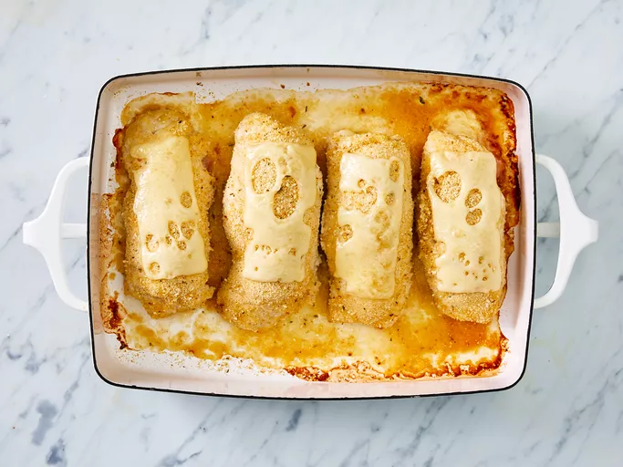

Chicken Cordon Bleu

Chicken Cordon Bleu—or as the French call it, Chicken Cordon Bleu—is an entree where chicken is
wrapped around cheese and ham, baked, and then topped with a creamy mustard-tinged sauce.
The French stands for "blue ribbon," I believe.
Ingredients
- 1 pound boneless, skinless chicken breast halves
- 1/4 teaspoon salt
- 1/8 teaspoon ground black pepper
- 6 slices Swiss cheese
- 4 slices cooked ham
- 1/2 cup seasoned bread crumbs
Steps
- Preheat oven to 350 degrees F. Coat a baking dish with oil or cooking spray.
- Pound chicken breast halves to 1/4 inch thickness.
- Season chicken with salt and pepper. Place a Swiss cheese slice and a ham slice on top of each chicken breast.
- Roll each chicken breast and secure with toothpicks.
- Place chicken breasts in the baking dish and sprinkle bread crumbs over the top.
- Bake in the oven until chicken is no longer pink—30 to 35 minutes.
- Remove from the oven and place 1/2 Swiss cheese slice on top of each chicken breast.
- Return to the oven for 3 to 5 minutes, until cheese has melted. Remove toothpicks and serve.